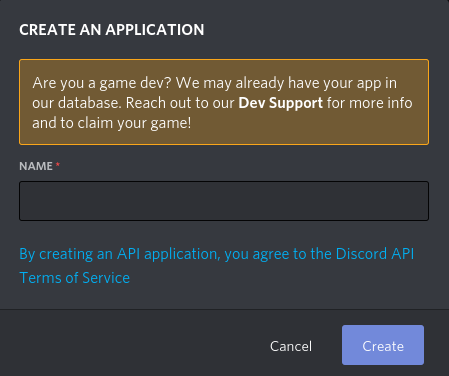
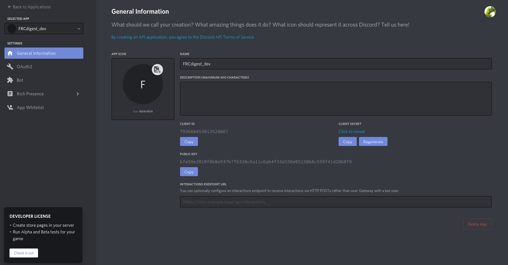
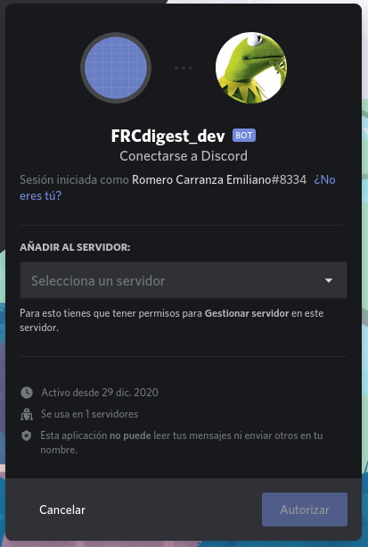
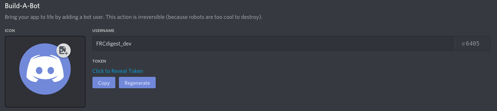

Principal
FRCdigest
Un bot de discord y aplicación web open source con la misión de otorgar a los estudiantes de Ing. en Sistemas de Información de la UTN FRC, información digerida y útil, para facilitar la vida académica.
Soporte
La base de datos de la aplicación soporta los siguientes planes:
- Ing. en Sistemas de Información
- plan 2008
Comandos
frc! helpmensaje de ayuda, muestra una lista de los comandos soportadosch nickname <nuevo_apodo>modifica el apodo del bot por nuevo_apodolist subjectsmuestra una lista de materias junto con su ord. y acrónimo(si tiene)rules <ord>muestra las correlativas para cursar y rendir la materia de ord ingresada
Cómo empezar
Creación de la aplicación y bot en el portal de discord
Una vez que ya se tiene una cuenta de discord y un servidor creado en la aplicación, es necesario entrar al portal para desarrolladores de discord. Dentro del portal hay que darle al botón New Aplication o Nueva Aplicación.
debería aparecer esto en pantalla

Se debe ingresar el nombre de la aplicación(FRCdigest_dev) y luego oprimir el botón create o crear.

En este portal es necesario ir a la opción de bot que se puede ver a la izquierda, luego se debe crear un bot para la aplicación. Es importante que solo la opción de public bot esté activada, de lo contrario en los próximos pasos se pueden presentar errores.
Por último hay que ir a la sección OAuth2, marcar la casilla de bot y copiar el link generado.
Entrando al link a través del navegador, nos va a dar la opción de agregar el bot a nuestro servidor de discord en seleccione un servidor

Oprimiendo el botón Autorizar, nuestro bot será agregado a nuestro servidor.
¡Ahora ya se tiene un servidor y bot para probar nuestro desarrollo!
Ejecutar bot
Ya con nuestra app, bot y servidor de desarrollo, es momento de ejecutar nuestro bot para ver si todo funciona correctamente.
Es necesario en el portal de desarrollador de discord a la sección de bot y copiar el token generado por discord.

Este token, debemos pegarlo en el archivo FRCdigest/app/bot/.env de la forma:
TOKEN=nuestro_token_copiado_desde_el_portal_de_discord
Ahora es necesario hacerle saber al bot que debe ejecutar el bot con dicho token, para que no trate de buscar el token en las environment variables como haría en un entorno de producción. Para esto, vamos a FRCdigest/app/bot/config.yml y cambiamos:
environment: prod
por:
environment: env
Listo, ahora nuestro bot está configurado para un entorno de desarrollo. Abrimos una terminal en la carpeta del repositorio, donde podemos ver la siguiente estructura de archivos:
/FRCdigest
/app
/docs
/DOCUMENTATION
...
Procurando que el directorio de trabajo sea /FRCdigest, ejecutamos:
python3 -m app.bot
Si todo es correcto, en unos pocos segundos el bot se ejecutará con exito y podremos verlo activo en nuestro servidor de discord. Para verificar podemos escribir en chat del servidor el mensaje
frc! help
y el bot debería contestar con un mensaje de ayuda mostrando los comandos soportados.
Necesito ayuda
En caso de cualquier duda o sugerencia, podés hablar por gitter :)